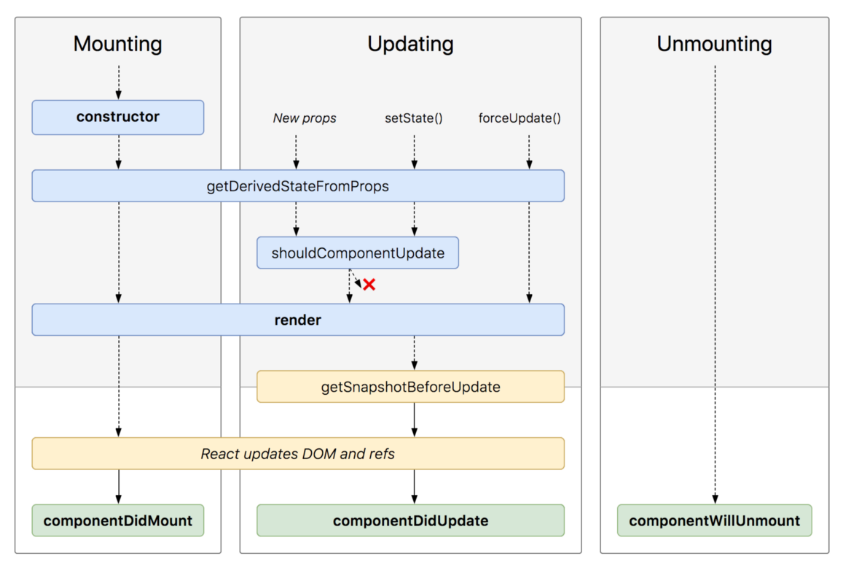
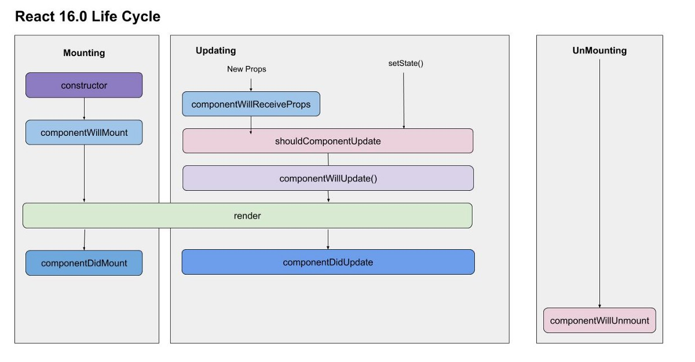

Explore more into React Hooks
In my last blog post, we took a glimpse at React Hook and learned the basic of migrating a simple class component to React Hooks. In this blog post, I will expand on the previous blog. Together, we will continue adding more features to our todo app and exlpore on more hook functions. At the end of this blog, you should be able to code all the required logics in React Hooks as
Introdcution
In my last blog post, we have successfully migrated class components to React Hooks for our simple todo application. However, that is only the tip of the iceberg. Now we will continue our journey to review some other hook functions. We will keep on building our todo app and bring in more features with the help of React Hooks.
The useReducer hook - managing collection of states
In our todo app, we have only dealt with the useState hook which we have used to replace the state and setState() functions in the class component. The useState hook is good at managing a single state.
An excellent application should provide feedback when necessary so our users won't be in the dark.
For example, in our todo app, one thing we can improve on is after users perform some actions such as add a task. We could display a message to inform them if their actions are successful.
To achieve this, I want to introduce another component which will set any alert information. So, everytime when the users perform some actions, we will let them know if the operations have been successful or not. We will have two props to be passed into this component called type and msg to control its color and message displayed. Also, in our parent component which is the App component, we will have a boolean value - display as our switch whether to show the component. Now, we have a total of three states for a single component. Of course, we can call useState hook three times and manage those states seperately or we can use a single object to manage all these states. But, what about if we have 10 states or 15 or even more. It will soon become a mess. The code is gonna be hard to read and it will be difficult to figure out which state to use.
Luckily, we have the useReducer hook come to the rescue. It can manage a group of states centrally.
The useReducer hook takes in two parameters: a reducer function and an initial state. It then returns an array with two elements, the state and a dispatch function.
const [state, dispatch] = useReducer(reducer, initialState);
The return value of the useReducer() hook are the current state and a dispatch function. We can access the state simply by using the state but to change our state now, we don't have a setXXX() function to call instead we use the dispatch function as an alternatives since our states are managed internally by the useReducer() hook.
To use the dispatch function, we just pass in the action we would like to dispatch and data if required. But remeber, this action will correspond to our reducer function.
Do not worry if this doesn't make any senses yet. I will explain more in the video and they will become more clear when you see the demo.
The useEffect hook - managing side effects
A little detour of Class Component LifeCycle methods
React class components use lifecycle methods to help trigger or perform certain actions at certain time. The certain times will be tied to the three phases of React lifecyclecy: Mounting(born), Update(grow), Unmount(die). To understand how it works, here are two pictures of the old and new React LifeCycle:
 Now, if you are screaming, shouting or cursing, it is totally normal. It will take quite some time and experience to understand all those methods - when to use them and how to use them. Even experienced developers may sometimes get confused and introduce bugs to the program.
Lucky enough, we don't have to go through all these pain. (However, it will help you gain a deep understanding of React if you know the lifecycle of a React component.) Because in function component, it is much more straight-forward. Let us talk about the useEffect hook which as its name suggests is used to manage side effects.
What is Side Effect?
In the world of programming, a side effect is always related to a function. A function that causes a non-local state change is considered as its side effect.
(It is okay if you don't fully understand the concept. But let me just try to put it another way. Remeber the idiom - "What happened in Vegas, stays in Vegas". So, here, Vegas is our local function scope. If what happened in Vegas, stayed in Vegas. We are fine - no side effects. Otherwise, we got ourselves some side effects.)
Common Side Effect
- Logging to the console or elsewhere
- Accessing or setting browser's local storage
- Fetching data
- Setting up timer with setInterval or setTimeout
- Subcribing and unscribing to services
- Accessing or measuing values like browser or DOM elment's width, height
This of course is not an exhaustive list. But they are the most common ones that I have used or encountered. If you are not sure if something is a side effect, first, think about our Vegas analogy. If still unsure, ask help from our best friend "Google".
How to use useEffect hook?
If you are already familiar with React LifeCycle methods, useEffect hook is like 3 methods combined: the componentDidMount, the the componentWillUnmount, the componentWillUpdate()
If you don't know about those methods, you don't have to. Because useEffect hook will work the same and it is much easier to understand.
useEffect(() => {
// perform effect
return () => {/* clean up */}
}, [dep1, dep2]);
The above code snippet shows us how we can use the useEffect hook. We call the useEffect() function and pass in two parameters, which is the second is optional. The first parameter is a callback function. The second is a dependency list. Every time if a variable in the dependency list changes, React will execute our callback function. If we don't pass in a second parameter, the callback function will execute every time the component is rendered. Then, we can return a function which usually is some clean up code like unscribing, stop timer and etc. This function will be called by React before the component unmount.
This leads to many possible scenarios how we can use the useEffect hook:
- We want to run an effect after every render
- We want to run an effect only once after the component
- We want to run an effect on variable changes:
- We want to run the effects and clean up when the component unmounts:
useEffect(() => {
// perform effect
});
useEffect(() => {
// perform effect
}, []);
useEffect(() => {
// perform effect
}, [dep1, dep2]);
useEffect(() => {
// perform effect
return () => {/* clean up */}
}, [dep1, dep2]);
We will see some examples in my video demonstration.
The useRef hook - managing state without re-rendering the UI
As I briefly mentioned in my first blog, in React, when dealing with form, we can choose between controlled component (recommended) and uncontrolled component. The difference between a controlled the two is whether the component keeps track of its own states. We create a uncontrolled component with the help of the useRef hook. Also, since the state is not managed by React but by ourselves, a re-render will not be triggered.
Even though it is recommended that we use controlled component as much as possible, there will be cases when uncontrolled can be a better choice. For example, when we would like to persist values in the ref across renders. With power also comes with responsibility. So we must be careful when handling uncontrolled component.
How to use the useRef hook?
When we call the useRef function, we can think that we have generated a mark. Then we can place this mark on one of the DOM elements. With that, we have the power to access its state.
const myRef = useRef();
return (
)
Video Demonstration
If the embedded video is not working, please use the link below to watch it.
Click here to watch the videoConclusion
In this blog, we have introduced three more commonly used React hooks: useReducer, useEffect, and useRef. The useReducer hook helps us manage a group of related states; The useEffect hook helps us perform side effects. And the useRef hook can create uncontrolled component so we can manage the state by ourselves.
This covers 80% on the basic of React hooks. There are still some performance hooks like the useMemo hook. However, it is hard to figure out when to or not to use them. If used incorrectly, you will even slow down the performance. Also, it is also recommended to avoid them as possible. In addition, you can create your custom hooks which you can check by yourself. I hope you all enjoyed reading this blog and gained more understanding on React hooks. With the knowledge, you could create very much all the basic web pages using React hooks. Keep coding and thanks all.
Source Code
https://github.com/NirvanaPhX/React-TodoList